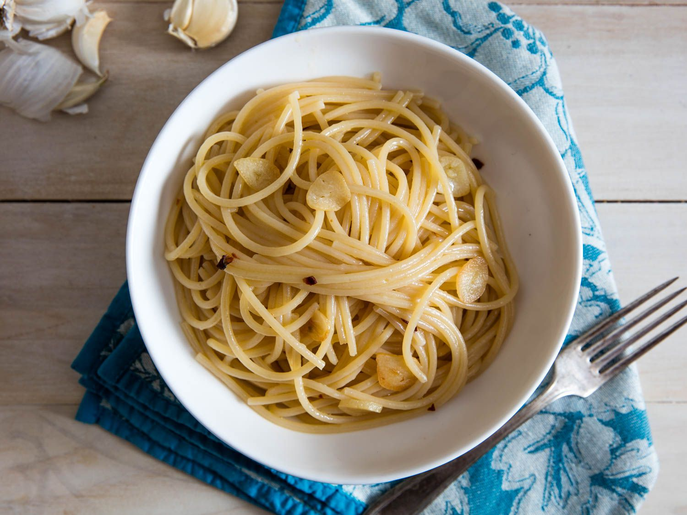

Spaghetti Aglio e Olio

Description
Spaghetti aglio e olio is a traditional Italian pasta dish from Naples. It is a typical dish of Neapolitan
cuisine and is widely popular. Its popularity can be attributed to it being simple to prepare and the fact that
it makes use of inexpensive, readily available ingredients that have long shelf lives in a pantry.
Ingredients
- Kosher salt
- 1 pound (450 g) dried spaghetti
- 1/2 cup (120 mL) extra-virgin olive oil
- 4 medium cloves garlic, thinly sliced
- Red pepper flakes, to taste (optional)
- Minced flat-leaf parsley, for serving (optional)
Steps
- In a pot of salted boiling water, cook spaghetti until just shy of al dente (about 1 minute less than the
package directs). Reserve pasta cooking water.
- Meanwhile, in a large skillet, combine 6 tablespoons oil and garlic. Add pinch of red pepper flakes, if
using. Cook over medium heat until garlic is very lightly golden, about 5 minutes. (Adjust heat as necessary
to keep it gently sizzling.)
- Transfer pasta to skillet along with 1/2 cup pasta water, increase heat to high, and cook, stirring and
tossing rapidly, until a creamy, emulsified sauce forms and coats the noodles. Remove from heat, add
remaining 2 tablespoons olive oil, and stir well to combine. Mix in parsley, if using, and serve right away.